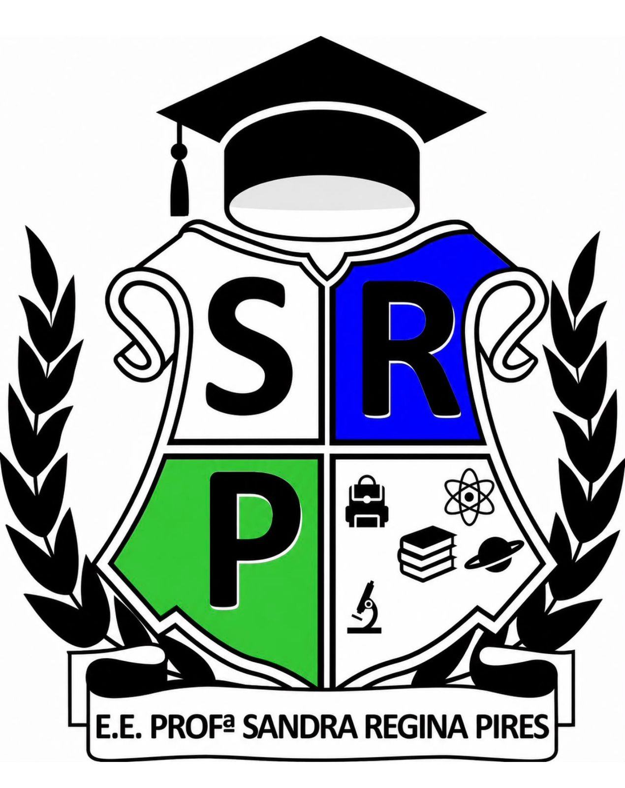
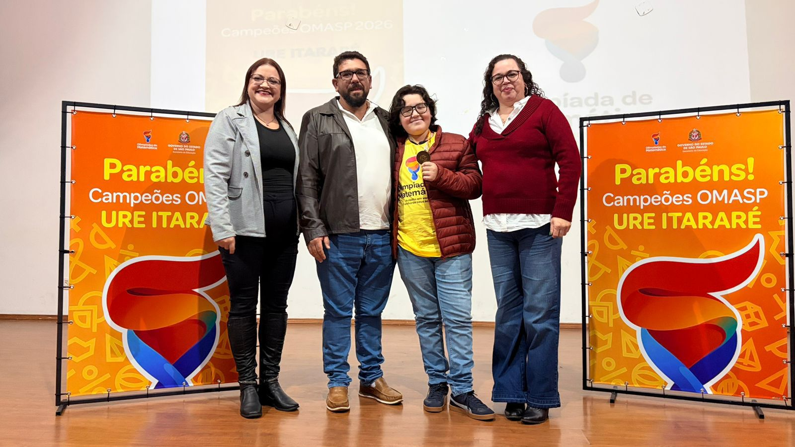

Educação, Conhecimento e Futuro

BARÃO DE ANTONINA - URE ITARARÉ
Escola comemora bons resultados no IDEB 2025 📚🏆
A escola celebrou os resultados do IDEB 2025, alcançando nota 6,6 nos Anos Finais do Ensino Fundamental e 5,3 no Ensino Médio. Os índices refletem o compromisso de estudantes, professores, gestores e famílias com a qualidade da educação. A conquista reforça o trabalho coletivo da comunidade escolar e o empenho contínuo na busca pela excelência no ensino.
07/09 - Feriado Nacional
08/09 a 18/09 - Provas Bimestrais
21/09 a 28/09 - Prova Paulista
21/09 a 25/09 - Semana de avaliações (ALURA)
01/10 - Feriado Municipal
02/10 - Prédio requisitado para eleições
05/10 - Início do 4° Bimestre
12/10 - Feriado Nacional
15/10 - Dia dos Professores
16/10 - Conselho de Classe
19/10 a 23/10 - Semana de avaliações (ALURA)
23/10 - Reunião de Pais
28/10 - Dia do Funcionário Público
29/10 e 30/10 - Saresp - 9° ano EF
02/11 - Feriado Nacional
04/11 e 05/11 - Aulas On-line
04/11 e 05/11 - Provão Paulista - 3° Série EM
06/11 - Saresp Itinerários - 3° Série EM
09/11 - Saresp Itinerários - 2° Série EM
10/11 e 13/11 - Aulas On-line
10/11 e 11/11 - Provão Paulista - 2° Série EM
12/11 e 13/11 - Provão Paulista - 1° Série EM
18/11 e 19/11 - Saresp - 6° ano EF
23/11 a 27/11 - Semana de avaliações (ALURA)
26/11 e 27/11 - Saresp - 7° ano EF
30/11 e 01/12 - Saresp - 8° ano EF
Telefone e WhatsApp : (15)3573-1173
E-mail: e015581a@educacao.sp.gov.br
Instagram: @escolasandrarp
Endereço: AVENIDA BRASILIA, 825 - RUA. CENTRO. 18490001 Barão de Antonina - São Paulo
Código INEP: 35015581
Diretora: Marcia Aparecida Sota
Vice-Diretor: Aldo José de Andrade
Aluno Arthur José de Camargo Rodrigues conquista medalha de bronze na 3ª fase da OMASP.

💎 SAEB 2025
A E.E. Profª Sandra Regina Pires conquistou a classificação Diamante no SAEB 2025, reconhecendo o excelente desempenho dos estudantes e o compromisso de toda a comunidade escolar com a qualidade da educação. A conquista reforça a dedicação de alunos, professores, gestores e famílias na busca pela excelência no ensino. 🏆📚✨